R and Visualizations – Quick Plots
In this post, I wanna talk about how you can make quick visualizations with R. This series will be continued with advanced plotting using the neat R package ggplot2 or interactive graphics with plotly. But at first let’s start with some quick and dirty techniques to get a first glance at your data. As you know, every data analysis should start with summaries of exploratory statistics and most important a holistic glimpse into your data set. Let’s face it, human are visual living beings.
I will briefly capture the basic graphic types:
- Scatter Plots
- Line Graphs
- Bar Graphs
- Histograms
- Box Plots
- Function Curves
Scatter Plot
Let’ start with a simple scatter plot. The sample data set we will use for the demonstrations is the build in Motor Trend Car Road Tests (mtcars) data set. Use the str() command to get to know the structure of the data.frame. As you see we have 11 numerical variables.
str(mtcars)
'data.frame': 32 obs. of 11 variables:
$ mpg : num 21 21 22.8 21.4 18.7 18.1 14.3 24.4 22.8 19.2 ...
$ cyl : num 6 6 4 6 8 6 8 4 4 6 ...
$ disp: num 160 160 108 258 360 ...
$ hp : num 110 110 93 110 175 105 245 62 95 123 ...
$ drat: num 3.9 3.9 3.85 3.08 3.15 2.76 3.21 3.69 3.92 3.92 ...
$ wt : num 2.62 2.88 2.32 3.21 3.44 ...
$ qsec: num 16.5 17 18.6 19.4 17 ...
$ vs : num 0 0 1 1 0 1 0 1 1 1 ...
$ am : num 1 1 1 0 0 0 0 0 0 0 ...
$ gear: num 4 4 4 3 3 3 3 4 4 4 ...
$ carb: num 4 4 1 1 2 1 4 2 2 4 ...
So let’s quickly plot the weights wt against the gasoline consumption mpg (miles per gallon)
plot(mtcars$wt, mtcars$mpg)
As expected, we can see a clear negative correlation. The heavier the car the less miles per gallon are driven, hence the gasoline consumption for a given distance rises.
We now use the ggplot2 package. If you don’t have it installed yet, call install.packages("ggplot2").
Now we can activate the library and use its quick plot function qplot() to get the similiar result but in a nicer format.
library(ggplot2)
qplot(mtcars$wt, mtcars$mpg)
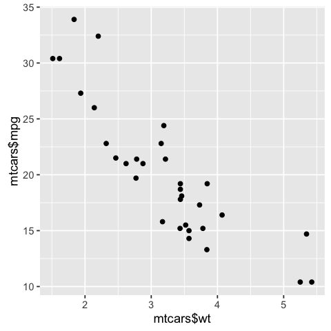
Looks cool right? … And if your two variables are in the same data set you can leave out the $ declaration and call qplot(wt, mpg, data = mtcars)
Note that for both approaches the variables for the
x axisis the first parameter, followed by they axis
I will go more in depth with the individual plotting function ggplot() in later blog posts of this series. So let’s move forward to line graphs.
Line Graph
For this demonstrations the build in pressure data set suits perfectly. Let’s have a look…
str(pressure)
'data.frame': 19 obs. of 2 variables:
$ temperature: num 0 20 40 60 80 100 120 140 160 180 ...
$ pressure : num 0.0002 0.0012 0.006 0.03 0.09 0.27 0.75 1.85 4.2 8.8 ...
Ok… so why not check out the relationship between temperature and pressure. To declare a line graph for the base plot() function declare its type parameter with "l"
plot(pressure$temperature, pressure$pressure, type="l")
If we want to modify the line, you can simply call e.g. points() in the next line with the same data to add points to the lines. When you want to display other line graphs in the same plot, just call lines(). To distinguish between the two lines, use the col parameter to define the color.
plot(pressure$temperature, pressure$pressure, type="l")
# add points to the line graph
points(pressure$temperature, pressure$pressure)
# add another line graph with points to the current plot. Use a red color
lines(pressure$temperature, pressure$pressure/2, col="blue")
points(pressure$temperature, pressure$pressure/2, col="blue")
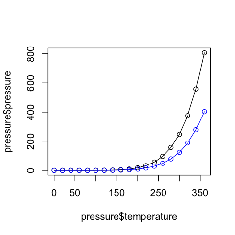
Now let’s look again at the qplot() function of the ggplot2 library.
qplot(temperature, pressure, data=pressure, geom="line")
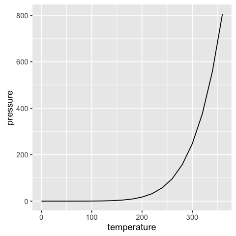
Like in the case of the base plot() function you can simply add modification options or other lines.
qplot(temperature, pressure, data=pressure, geom=c("line", "point"), color = "a") +
# Add a second line with points to the plot. Use the group parameter color for differentiation. This sets colors autom.
geom_line(aes(temperature, pressure/2, color = "b"), pressure)+
geom_point(aes(temperature, pressure/2, color = "b"), pressure) #+ scale_color_manual(values=c("black", "blue"))
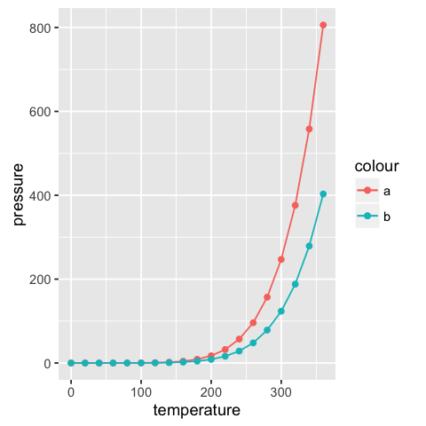
To add another line to the quick plot of ggplot2, you have to use the plus sign +. This is a common procedure, also for the ggplot() function. You basically add other options, lines etc. to the active plot. The aes parameter builds the aesthetic mappings and describe how variables in the data are mapped to visual properties (aesthetics) of geoms (geometric forms: lines, points etc.). The arguments for aes are the x and y axis. Optionally you can set a color parameter for differentiation.
Note that the
colorargument in theqplot()function is not equivilent to thecolargument in the baseplot()function.Coloris a group parameter and sets automatically the colors. If you want to determine the used colors in the plot manually you have also to addscale_color_manual()to the plot function. You will see that in another post.
Bar Graph
To make a bar chart you can use the base function barplot() and pass it a vector of values for the height of each bar and (optionally) a vector of labels for each bar (names.arg parameter).
Let us investigate the build in data BOD. We have a discrete Time variable and continous values for the biochemical oxygen demand.
str(BOD)
'data.frame': 6 obs. of 2 variables:
$ Time : num 1 2 3 4 5 7
$ demand: num 8.3 10.3 19 16 15.6 19.8
# without names.arg=BOD$Time the x axis would not have labels
barplot(BOD$demand, names.arg=BOD$Time)
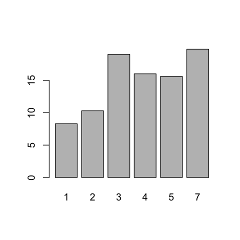
For every discrete Timestamp the demand value is plotted. Sometimes the y axis (or bars) shows the discrete counts for each category on the x axis. This is similar to a histogram, but with a discrete instead of continuous x axis. To generate the count of each unique value in a vector, call the table() function.
table(mtcars$cyl)
# There are 11 cases with 4 cylinders, 7 cases of 6, and 14 cases of 8
4 6 8
11 7 14
Now you can easily use the barplot() function to generate a visualization out of that information.
# Generate a table of cylinder counts
barplot(table(mtcars$cyl))
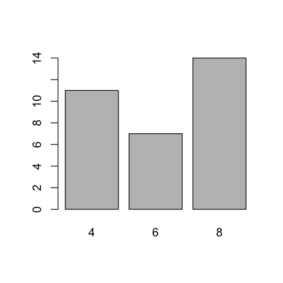
In ggplot2 you can use the qplot() function for a fast way to show a count-based bar chart. Notice the difference between a continous and a discrete x axis. Call the factor() method to discretize the x values.
# cyl is continuous here
qplot(mtcars$cyl)
# Treat cyl as discrete
qplot(factor(mtcars$cyl))
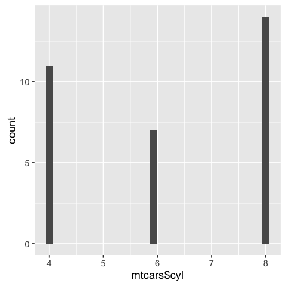
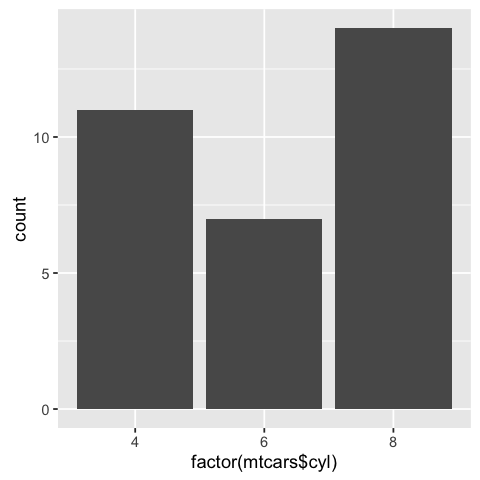
Histogram
Now we will view the distribution of one-dimensional data with a histogram. Let’s see how the gasoline consumption of the cars in the mtcars data set is distributed.
hist(mtcars$mpg)
# Specify approximate number of bins with breaks
hist(mtcars$mpg, breaks=10)
The chart at the bottom has more bins. Notice that because the bins are narrower, there are fewer items in each bin.
With the ggplot2 package you can get a similar result using qplot().
library(ggplot2)
# default bin width
qplot(mtcars$mpg)
# with wider bins
qplot(mpg, data=mtcars, binwidth=4)
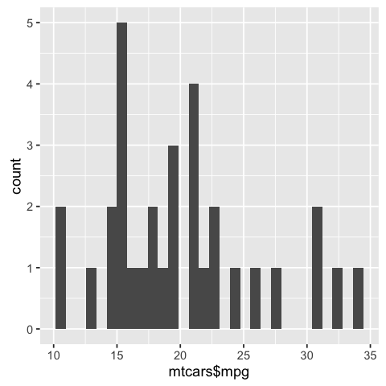
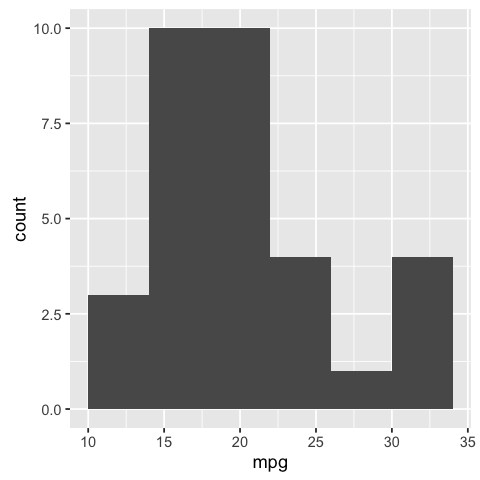
Box Plots
Now it is time to focus on Box plots. It is a helpful tool to compare distributions. Therfore, let’s dive into the effect of vitamin C on tooth growth in guinea pigs.
str(ToothGrowth)
'data.frame': 60 obs. of 3 variables:
$ len : num 4.2 11.5 7.3 5.8 6.4 10 11.2 11.2 5.2 7 ...
$ supp: Factor w/ 2 levels "OJ","VC": 2 2 2 2 2 2 2 2 2 2 ...
$ dose: num 0.5 0.5 0.5 0.5 0.5 0.5 0.5 0.5 0.5 0.5 ...
We want to compare the tooth length of the two supplement types (VC or OJ). So we can look at the box plots. The base plot()function will automatically create a box plot when x is a factor. So pass it a factor of x values and a vector of y values. Here, supp is a factor value with two levels VC and OJ, where y is the numerical length value.
plot(ToothGrowth$supp, ToothGrowth$len)
As we can see, the group of guinea pigs which got the orange juice (OJ) have a higher median and quartiles as well as the spread of lengths is narrower.
If the two vectors are in the same data frame, you can also use the formula syntax (a typical R procedure as seen in other functions). With this syntax, you can also combine two variables on the x axis. We can see then how the dose variable (0.5, 1, and 2 mg/day) interacts with the supplement group (OJ or VC).
# Formula syntax
boxplot(len ~ supp, data = ToothGrowth)
# Put interaction of two variables on x axis
boxplot(len ~ supp + dose, data = ToothGrowth)

Not surprisingly, as the dose of vitamine C rises the tooth length does too. And with 2 mg/day the medians of the two supplement groups are the same. But the VC group has more variance. The lowest variance (except of one outlier) is achieved with 1 mg/day of ascorbic acid (a form of vitamin C and coded as VC).
As you should already guess, slightly* the same results can be achieved with qplot() (* Read the note section at the end). You only have to declare the geom parameter as "boxplot". To combine more variables, you have to use the interaction() function as x variable; formula syntax is not allowed.
library(ggplot2)
qplot(ToothGrowth$supp, ToothGrowth$len, geom="boxplot")
# Using three separate vectors
qplot(interaction(ToothGrowth$supp, ToothGrowth$dose), ToothGrowth$len,geom="boxplot")
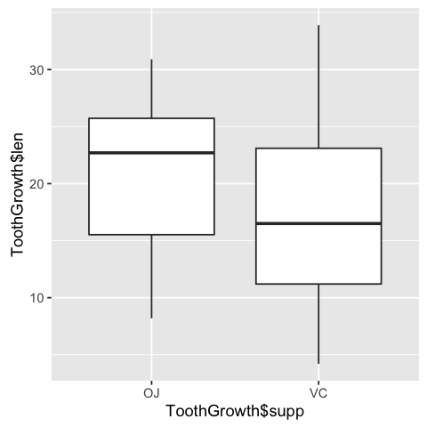
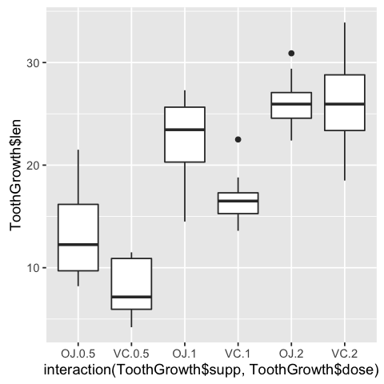
You may noticed that the box plots from the base graphics are slightly different from
ggplot2. This is because they use different methods for calculating quantiles. See?geom_boxplotand?boxplot.statsfor more information.
Function Curves
If you want to plot a function use curve() and pass it an expression with the variable x. Define the from and to arguments to set the domain.
curve(x^3 - 5*x, from=-4, to=4)
You can also define your own function. It just has to output a numeric vector. Using add = TRUE will add a curve to the previously created plot. We will show this by plotting the inverse function.
# Plot a user-defined function
myfun <- function(xvar) {
1/(1 + exp(-xvar + 10))
}
curve(myfun(x), from=0, to=20)
# Add a line:
curve(1-myfun(x), add = TRUE, col = "red")
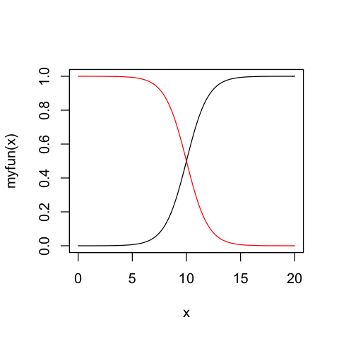
For the ggplot2 package equivilent, one used qplot(c(0,2), fun=myfun, stat="function", geom="line") But now stat is deprecated in 2016 and fun is no longer an acceptable parameter.
To get similar results with the ggplot2 package you now have to use the ggplot() method and call the stat_function() with parameter fun. The domain input has to be defined as a data.frame
library(ggplot2)
# Plot a user-defined function
myfun <- function(xvar) {
1/(1 + exp(-xvar + 10))
}
ggplot(data.frame(x=c(0, 20)), aes(x)) +
stat_function(fun=myfun)
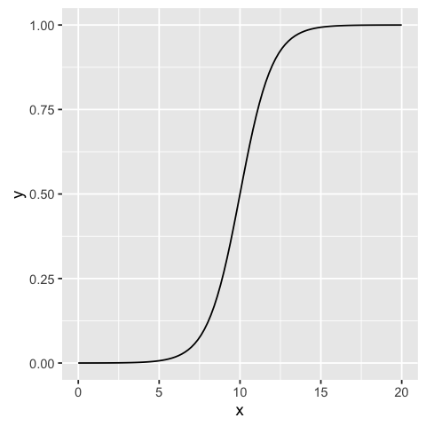
So now you should have a basic understanding to plot some quick graphs to get a first look into your data. I will try to continue this series with more detailed explanations on how to use the ggplot2 package with the ggplot() function since this is more powerful for making expressive charts.